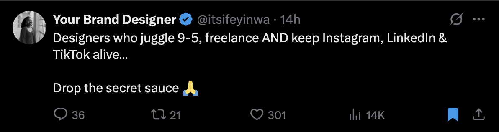

Is there really a secret?
This tweet appeared on my timeline like a confession disguised as a question: "Designers who juggle 9-5, freelance AND keep Instagram, LinkedIn & TikTok alive... Drop the secret sauce 🙏"
Fourteen thousand people saw themselves in it.
I felt something else — a deep, specific dread.
Not at the person asking. They're just trying to survive in a system that demands we fragment ourselves into productivity. But at the premise itself, sitting there unquestioned: that this is simply what we must do now. Work full-time. Hustle on the side. Feed the platforms. Keep the personal brand alive. Optimize every hour. The question isn't "should we?" but "how do we do it better?"
What if the secret they're looking for doesn't exist? What if the real question is: why are we accepting this as the baseline for a life?